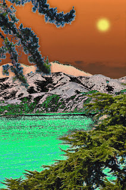

31 Начало конца
Мне приснилось, что земля вдруг наклонилась под углом 90 градусов и всё начало падать, проваливаться в бездну. Люди пытались цепляться за здания, набиваться в магазины и отсиживаться на одной из стенок, пока она не проламывалась. Я вспомнила - я ведь умею летать... я не провалюсь в бездну. А как же они?
Мне кажется, сейчас вся моя жизнь проходит проверку на подлинность. То, что раньше казалось важным, сейчас при свете блестит как жестянка и я вижу, насколько же оно пустое... бывает, остается то, что казалось мелочами.. но каждая такая мелочь хранит маленькую эмоцию, иногда частичку счастья...из них строится то, что составляет мою настоящую сущность, то единственное, что однажды останется со мной... когда я покину этот мир. Словно собираю приданное.
Чувствую, что что-то идет к своему завершению. Должен настать какой-то Конец. Но этот конец меня не пугает, поскольку каждый конец - новое начало. После каждой маленькой смерти происходит новое рождение
Помню те моменты, в которые мне было более чем хорошо и желаю туда вернуться. Но не вернусь. Ибо того же самого мне уже не пережить, будет что-то новое и оно будет еще опаснее... Бегство от себя или путь к себе? Где грань?
Странное состояние. Словно кто-то пытается прочитать твою память, пытается всю ее перетряхнуть... Достает такие воспоминания, о которых ты забыл уже давным-давно... воспоминания сменяются одно другим и их уже не избежать... приходится глядеть в глаза тому, что пытался забыть... не спрятаться, не вернуться в привычное... с тебя словно содрали твою одежду и глядят при ярком свете... цепочка воспоминаний, новые, неожиданные, приходят с новой силой... сменяется одно другим.. непроизвольно. Не это ли описывали те, кто был на пороге смерти? Вся жизнь.. как фильм.. как нарезанный фильм...
И вновь чувство конца чего-то. Спрашиваю себя - возмножно, это лишь потому, что я хочу, чтобы что-то закончилось. И боюсь этого. Но на деле хочу. Нужно движение. Застой опасен, в чем бы то ни было. С другой стороны, сейчас такой момент, когда мне хочется больше чем никогда уйти от этого мира, чтобы раскрыть себя... а затем вернуться.. только уже кем-то другим.
Чтобы стать кем-то другим, надо уже кем-то быть. Я кто-то уже есть?
Когда-то, давно, еще в школе, нас просили написать определение своего "я". Вкратце, выделить лишь самое главное. Преподаватель привела пример о себе: "я - женщина, я мать". Остальные начали писать - "я мальчик, я ученик...". А я в тот момент задумалась... а кто же правда я... без чего бы я была бы уже не я? В тот момент я написала - "Я - нечто живое, постоянно что-то ищущее..."
Сейчас бы я сказала это иначе:
Я - живое. Я - чувствующее и ощущающее. Я - осознающее.
Я - несущее с собой странный разношерстый багаж - мою память.
Это - суть.
Или даже проще: "Я есть" - как тетраграмматон.
Все остальные описания - лишние. Не надо ни за что цепляться - это балласт, который мешает быть легким. Иначе, когда мир наклонится на 90 градусов, не сможешь взлететь.